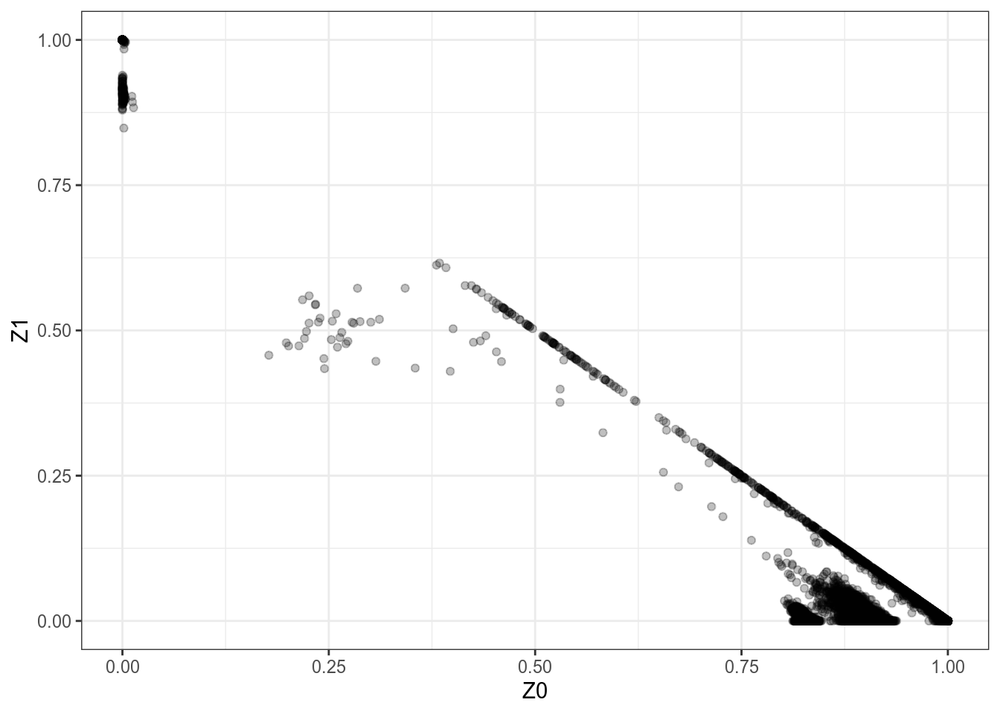
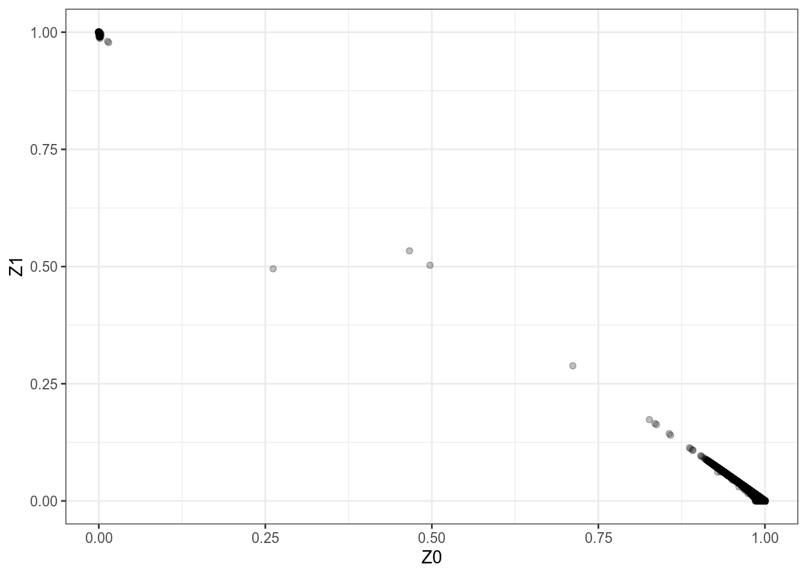

relatedness-filtering
Henry Wittich
2020-11-16
Last updated: 2020-12-13
Checks: 7 0
Knit directory: GWAS_QC/
This reproducible R Markdown analysis was created with workflowr (version 1.6.2). The Checks tab describes the reproducibility checks that were applied when the results were created. The Past versions tab lists the development history.
Great! Since the R Markdown file has been committed to the Git repository, you know the exact version of the code that produced these results.
Great job! The global environment was empty. Objects defined in the global environment can affect the analysis in your R Markdown file in unknown ways. For reproduciblity it’s best to always run the code in an empty environment.
The command set.seed(20201108) was run prior to running the code in the R Markdown file. Setting a seed ensures that any results that rely on randomness, e.g. subsampling or permutations, are reproducible.
Great job! Recording the operating system, R version, and package versions is critical for reproducibility.
Nice! There were no cached chunks for this analysis, so you can be confident that you successfully produced the results during this run.
Great job! Using relative paths to the files within your workflowr project makes it easier to run your code on other machines.
Great! You are using Git for version control. Tracking code development and connecting the code version to the results is critical for reproducibility.
The results in this page were generated with repository version 4f2f9ba. See the Past versions tab to see a history of the changes made to the R Markdown and HTML files.
Note that you need to be careful to ensure that all relevant files for the analysis have been committed to Git prior to generating the results (you can use wflow_publish or wflow_git_commit). workflowr only checks the R Markdown file, but you know if there are other scripts or data files that it depends on. Below is the status of the Git repository when the results were generated:
Ignored files:
Ignored: .Rhistory
Ignored: .Rproj.user/
Note that any generated files, e.g. HTML, png, CSS, etc., are not included in this status report because it is ok for generated content to have uncommitted changes.
These are the previous versions of the repository in which changes were made to the R Markdown (analysis/relatedness-filtering.Rmd) and HTML (docs/relatedness-filtering.html) files. If you’ve configured a remote Git repository (see ?wflow_git_remote), click on the hyperlinks in the table below to view the files as they were in that past version.
| File | Version | Author | Date | Message |
|---|---|---|---|---|
| Rmd | 4f2f9ba | Henry Wittich | 2020-12-13 | Completed PCA! |
| html | 7b0148c | Henry Wittich | 2020-12-13 | Build site. |
| Rmd | 72f56c0 | Henry Wittich | 2020-12-13 | Created IBD plots for each population group |
| html | af6a2e6 | Henry Wittich | 2020-11-17 | Build site. |
| Rmd | ad5a512 | Henry Wittich | 2020-11-17 | Calculated IBD and generated an IBD plot for ALL population |
| html | 42db064 | Henry Wittich | 2020-11-16 | Build site. |
| Rmd | af53890 | Henry Wittich | 2020-11-16 | updated formatting on website |
| html | 55ee1d1 | Henry Wittich | 2020-11-16 | Build site. |
| Rmd | 9a7d97a | Henry Wittich | 2020-11-16 | Starting the relatedness filtering step |
Introduction
The purpose of this step is to remove related individuals from the dataset. When running a GWAS, you want to have as little relatedness as possible because related individuals will have similar SNPs and thus could produce false positive significant signals.
1 Create a pruned list of SNP IDs
Given the size of our dataset, calculating % identity by descent between every individual in the dataset using every SNP would be time-consuming and ultimately inefficient. According to Turner et al., a “dataset only 100,000 markers will yield stable estimates of kinship coefficients.” Furthermore, the IBD calculation assumes there is no LD. In this first step of relatedness filtering, we will generate a pruned set of SNPs that are in linkage equilibrium. This serves two purpose: first, it creates a smaller set up SNPs to calculate IBD with, and it also sets us up for LD pruning.
plink --bed ~/gwasqc/output/11-8-2020/missingness_hwe_steps/05filtered_HWE.bed --bim ~/gwasqc/output/11-8-2020/missingness_hwe_steps/05filtered_HWE.bim --fam ~/gwasqc/output/11-8-2020/missingness_hwe_steps/05filtered_HWE.fam --indep-pairwise 50 5 0.3 --out ~/gwasqc/output/11-16-2020/relatedness_steps/01LD_prune_listThis command uses the HWE filtered list of SNPs and prunes them by linkage disequilibirum. the –indep-pairwise flag takes three parameters: the window size, the step size, and the r^2 threshold. In this case, plink looks at 50 variants at a time and calculates the squared correlation between pairs of variants; if a pair of variants has an r^2 higher than the threshold, they are pruned from the window. Plonk then shifts the window by 5 variants and repeats the calculations. In other words, for all SNPs in linkage disequilibrium with each other, all but one are pruned out of the dataset. SNPs that are in linkage equilibirum with each other are written to the prune.in file while those that are excluded are written to the prune.out file:
– 01LD_prune_list.log
– 01LD_prune_list.prune.in
– 01LD_prune_list.prune.out
2 Determine the identity by descent of samples
To gauge the number of related individuals in the dataset, we will be performing IBD calculations between every unique pair of individuals, using the pruned list of SNPs in linkage equilibrium. We can accomplish this with the plink –genome command:
plink --bed ~/gwasqc/output/11-8-2020/missingness_hwe_steps/05filtered_HWE.bed --bim ~/gwasqc/output/11-8-2020/missingness_hwe_steps/05filtered_HWE.bim --fam ~/gwasqc/output/11-8-2020/missingness_hwe_steps/05filtered_HWE.fam --extract ~/gwasqc/output/11-16-2020/relatedness_steps/01LD_prune_list.prune.in --genome --out ~/gwasqc/output/11-16-2020/relatedness_steps/02relatedness.genomeProducing the following output files:
– 02relatedness.genome.log
– 02relatedness.genome.genome
First, the –extract flag uses the list of SNP IDs generated in step one to pull all SNPs that are in linkage equilibirum out of the bed/bim/fam files. The –genome flag performs an IBD calculation for each unique pair of individuals in the dataset. This calculation produces the Z0, Z1, and Z2 estimates, which represent the proportion of loci where the two individuals share zero, one, or two alleles identical by descent. These values can be used to infer the relationship between the two individuals: 
Thus, by plotting the Z0 versus Z1 for every pair of individuals, we get a good snapshot of the relationships in our sample population. This is called an IBD plot. Here is the IBD plot for all individuals in the dataset.
library("ggplot2")
ibd <- read.table("~/mount/gwasqc/output/11-16-2020/relatedness_steps/02relatedness.genome.genome",header=T)
ggplot(data=ibd,aes(x=Z0,y=Z1))+geom_point(alpha=1/4)+theme_bw()
Looking at the plot, it is clear that there are a few parent-child relationships in the dataset, as well as several siblings and cousins. Looking at the bottom right corner of the plot, there is a strange-looking gap in the cluster of non-related pairs. It is possible this is the result of the HapMap3 dataset being comprised of several populations from geographically distinct locations, resulting in strange relatedness estimates.
3 IBD separated by population
We are working with HapMap 3 data, which contains 1,301 samples from 11 different populations. The phase_3_samples.doc stored with the HapMap data lists the 11 populations and their corresponding 3-character labels, which are used in the relationships_w_pops_121708.txt file to identify samples by their population. For our purposes, we will group these 11 populations in 6 main groups:
– African: ASW, LWK, MKK, and YRI
– East Asian: CHB, CHD, and JPT
– Northwestern European: CEU
– Gujarati Indian: GIH
– Mexican: MEX
– Toscan: TSI
Extracting sample IDs by population
Next, we must create a list of sample IDs for each of the 6 population groups that we can use to pull out their data and generate IBD plots. We can accomplish this with the UNIX grep command:
#Pulling out all samples from the Gujarati Indian population
grep "GIH" relationships_w_pops_121708.txt > ~/gwasqc/output/12-13-2020/separating_populations/gujarati_indian_IDs.txtThe grep function takes 2 inputs: a string to search for and a file to search through. It searches through the file line by line and returns every line that contains the string. The “>” character writes grep’s output to the file specified. With this command, I pulled out all of the samples in the dataset from the Gujarati Indian population and wrote their IDs to the file gujarati_indian_IDs.txt.
Let’s do the same for every other population group:
#Pulling out all samples from African populations
#When searching for multiple terms, the syntax is as follows: 'word1\|word2'
grep 'ASW\|LWK\|MKK\|YRI' relationships_w_pops_121708.txt > ~/gwasqc/output/12-13-2020/separating_populations/african_IDs.txt
#Pulling out all samples from East Asian populations
grep 'CHB\|CHD\|JPT' relationships_w_pops_121708.txt > ~/gwasqc/output/12-13-2020/separating_populations/east_asian_IDs.txt
#Pulling out all samples from the Northwestern European population
grep "CEU" relationships_w_pops_121708.txt > ~/gwasqc/output/12-13-2020/separating_populations/northwestern_european_IDs.txt
#Pulling out all samples from the Mexican population
grep "MEX" relationships_w_pops_121708.txt > ~/gwasqc/output/12-13-2020/separating_populations/mexican_IDs.txt
#Pulling out all samples from the Toscan population
grep "TSI" relationships_w_pops_121708.txt > ~/gwasqc/output/12-13-2020/separating_populations/toscan_IDs.txtCreating new bfiles by population
Using these lists of IDs, we can then extract the data for each sample and generate new bfiles, separated by population. Using the –keep and –make-bed plink commands, we can use our missingness- and hwe-filtered bfiles to make new bfiles that only keep individuals from the same population group.
#Generating Gujarati Indian bfiles
plink --bfile ~/gwasqc/output/11-8-2020/missingness_hwe_steps/05filtered_HWE --keep ~/gwasqc/output/12-13-2020/separating_populations/gujarati_indian_IDs.txt --make-bed --out ~/gwasqc/output/12-13-2020/separating_populations/05gujarati_indian_filtered_HWE
#Generating African bfiles
plink --bfile ~/gwasqc/output/11-8-2020/missingness_hwe_steps/05filtered_HWE --keep ~/gwasqc/output/12-13-2020/separating_populations/african_IDs.txt --make-bed --out ~/gwasqc/output/12-13-2020/separating_populations/05african_filtered_HWE
#Generating East Asian bfiles
plink --bfile ~/gwasqc/output/11-8-2020/missingness_hwe_steps/05filtered_HWE --keep ~/gwasqc/output/12-13-2020/separating_populations/east_asian_IDs.txt --make-bed --out ~/gwasqc/output/12-13-2020/separating_populations/05east_asian_filtered_HWE
#Generating Northwestern European bfiles
plink --bfile ~/gwasqc/output/11-8-2020/missingness_hwe_steps/05filtered_HWE --keep ~/gwasqc/output/12-13-2020/separating_populations/northwestern_european_IDs.txt --make-bed --out ~/gwasqc/output/12-13-2020/separating_populations/05northwestern_european_filtered_HWE
#Generating Mexican bfiles
plink --bfile ~/gwasqc/output/11-8-2020/missingness_hwe_steps/05filtered_HWE --keep ~/gwasqc/output/12-13-2020/separating_populations/mexican_IDs.txt --make-bed --out ~/gwasqc/output/12-13-2020/separating_populations/05mexican_filtered_HWE
#Generating Toscan bfiles
plink --bfile ~/gwasqc/output/11-8-2020/missingness_hwe_steps/05filtered_HWE --keep ~/gwasqc/output/12-13-2020/separating_populations/toscan_IDs.txt --make-bed --out ~/gwasqc/output/12-13-2020/separating_populations/05toscan_filtered_HWELD pruning, IBD calculation, and IBD plots by population
Gujarati Indian
#LD Pruning
plink --bed ~/gwasqc/output/12-13-2020/separating_populations/05gujarati_indian_filtered_HWE.bed --bim ~/gwasqc/output/12-13-2020/separating_populations/05gujarati_indian_filtered_HWE.bim --fam ~/gwasqc/output/12-13-2020/separating_populations/05gujarati_indian_filtered_HWE.fam --indep-pairwise 50 5 0.3 --out ~/gwasqc/output/12-13-2020/relatedness_steps/01gujarati_indian_LD_prune_list
#IBD Calculation
plink --bed ~/gwasqc/output/12-13-2020/separating_populations/05gujarati_indian_filtered_HWE.bed --bim ~/gwasqc/output/12-13-2020/separating_populations/05gujarati_indian_filtered_HWE.bim --fam ~/gwasqc/output/12-13-2020/separating_populations/05gujarati_indian_filtered_HWE.fam --extract ~/gwasqc/output/12-13-2020/relatedness_steps/01gujarati_indian_LD_prune_list.prune.in --genome --out ~/gwasqc/output/12-13-2020/relatedness_steps/02gujarati_indian_relatedness#Generating IBD Plot
gujarati_indian_ibd <- read.table("~/mount/gwasqc/output/12-13-2020/relatedness_steps/02gujarati_indian_relatedness.genome",header=T)
ggplot(data=gujarati_indian_ibd,aes(x=Z0,y=Z1))+geom_point(alpha=1/4)+theme_bw()+xlim(0,1)+ylim(0,1)
| Version | Author | Date |
|---|---|---|
| 7b0148c | Henry Wittich | 2020-12-13 |
African
#LD Pruning
plink --bed ~/gwasqc/output/12-13-2020/separating_populations/05african_filtered_HWE.bed --bim ~/gwasqc/output/12-13-2020/separating_populations/05african_filtered_HWE.bim --fam ~/gwasqc/output/12-13-2020/separating_populations/05african_filtered_HWE.fam --indep-pairwise 50 5 0.3 --out ~/gwasqc/output/12-13-2020/relatedness_steps/01african_LD_prune_list
#IBD Calculation
plink --bed ~/gwasqc/output/12-13-2020/separating_populations/05african_filtered_HWE.bed --bim ~/gwasqc/output/12-13-2020/separating_populations/05african_filtered_HWE.bim --fam ~/gwasqc/output/12-13-2020/separating_populations/05african_filtered_HWE.fam --extract ~/gwasqc/output/12-13-2020/relatedness_steps/01african_LD_prune_list.prune.in --genome --out ~/gwasqc/output/12-13-2020/relatedness_steps/02african_relatedness#Generating IBD Plot
african_ibd <- read.table("~/mount/gwasqc/output/12-13-2020/relatedness_steps/02african_relatedness.genome",header=T)
ggplot(data=african_ibd,aes(x=Z0,y=Z1))+geom_point(alpha=1/4)+theme_bw()+xlim(0,1)+ylim(0,1)
| Version | Author | Date |
|---|---|---|
| 7b0148c | Henry Wittich | 2020-12-13 |
East Asian
#LD Pruning
plink --bed ~/gwasqc/output/12-13-2020/separating_populations/05east_asian_filtered_HWE.bed --bim ~/gwasqc/output/12-13-2020/separating_populations/05east_asian_filtered_HWE.bim --fam ~/gwasqc/output/12-13-2020/separating_populations/05east_asian_filtered_HWE.fam --indep-pairwise 50 5 0.3 --out ~/gwasqc/output/12-13-2020/relatedness_steps/01east_asian_LD_prune_list
#IBD Calculation
plink --bed ~/gwasqc/output/12-13-2020/separating_populations/05east_asian_filtered_HWE.bed --bim ~/gwasqc/output/12-13-2020/separating_populations/05east_asian_filtered_HWE.bim --fam ~/gwasqc/output/12-13-2020/separating_populations/05east_asian_filtered_HWE.fam --extract ~/gwasqc/output/12-13-2020/relatedness_steps/01east_asian_LD_prune_list.prune.in --genome --out ~/gwasqc/output/12-13-2020/relatedness_steps/02east_asian_relatedness#Generating IBD Plot
east_asian_ibd <- read.table("~/mount/gwasqc/output/12-13-2020/relatedness_steps/02east_asian_relatedness.genome",header=T)
ggplot(data=east_asian_ibd,aes(x=Z0,y=Z1))+geom_point(alpha=1/4)+theme_bw()+xlim(0,1)+ylim(0,1)
| Version | Author | Date |
|---|---|---|
| 7b0148c | Henry Wittich | 2020-12-13 |
Northwestern European
#LD Pruning
plink --bed ~/gwasqc/output/12-13-2020/separating_populations/05northwestern_european_filtered_HWE.bed --bim ~/gwasqc/output/12-13-2020/separating_populations/05northwestern_european_filtered_HWE.bim --fam ~/gwasqc/output/12-13-2020/separating_populations/05northwestern_european_filtered_HWE.fam --indep-pairwise 50 5 0.3 --out ~/gwasqc/output/12-13-2020/relatedness_steps/01northwestern_european_LD_prune_list
#IBD Calculation
plink --bed ~/gwasqc/output/12-13-2020/separating_populations/05northwestern_european_filtered_HWE.bed --bim ~/gwasqc/output/12-13-2020/separating_populations/05northwestern_european_filtered_HWE.bim --fam ~/gwasqc/output/12-13-2020/separating_populations/05northwestern_european_filtered_HWE.fam --extract ~/gwasqc/output/12-13-2020/relatedness_steps/01northwestern_european_LD_prune_list.prune.in --genome --out ~/gwasqc/output/12-13-2020/relatedness_steps/02northwestern_european_relatedness#Generating IBD Plot
northwestern_european_ibd <- read.table("~/mount/gwasqc/output/12-13-2020/relatedness_steps/02northwestern_european_relatedness.genome",header=T)
ggplot(data=northwestern_european_ibd,aes(x=Z0,y=Z1))+geom_point(alpha=1/4)+theme_bw()+xlim(0,1)+ylim(0,1)
| Version | Author | Date |
|---|---|---|
| 7b0148c | Henry Wittich | 2020-12-13 |
Mexican
#LD Pruning
plink --bed ~/gwasqc/output/12-13-2020/separating_populations/05mexican_filtered_HWE.bed --bim ~/gwasqc/output/12-13-2020/separating_populations/05mexican_filtered_HWE.bim --fam ~/gwasqc/output/12-13-2020/separating_populations/05mexican_filtered_HWE.fam --indep-pairwise 50 5 0.3 --out ~/gwasqc/output/12-13-2020/relatedness_steps/01mexican_LD_prune_list
#IBD Calculation
plink --bed ~/gwasqc/output/12-13-2020/separating_populations/05mexican_filtered_HWE.bed --bim ~/gwasqc/output/12-13-2020/separating_populations/05mexican_filtered_HWE.bim --fam ~/gwasqc/output/12-13-2020/separating_populations/05mexican_filtered_HWE.fam --extract ~/gwasqc/output/12-13-2020/relatedness_steps/01mexican_LD_prune_list.prune.in --genome --out ~/gwasqc/output/12-13-2020/relatedness_steps/02mexican_relatedness#Generating IBD Plot
mexican_ibd <- read.table("~/mount/gwasqc/output/12-13-2020/relatedness_steps/02mexican_relatedness.genome",header=T)
ggplot(data=mexican_ibd,aes(x=Z0,y=Z1))+geom_point(alpha=1/4)+theme_bw()+xlim(0,1)+ylim(0,1)
| Version | Author | Date |
|---|---|---|
| 7b0148c | Henry Wittich | 2020-12-13 |
Toscan
#LD Pruning
plink --bed ~/gwasqc/output/12-13-2020/separating_populations/05toscan_filtered_HWE.bed --bim ~/gwasqc/output/12-13-2020/separating_populations/05toscan_filtered_HWE.bim --fam ~/gwasqc/output/12-13-2020/separating_populations/05toscan_filtered_HWE.fam --indep-pairwise 50 5 0.3 --out ~/gwasqc/output/12-13-2020/relatedness_steps/01toscan_LD_prune_list
#IBD Calculation
plink --bed ~/gwasqc/output/12-13-2020/separating_populations/05toscan_filtered_HWE.bed --bim ~/gwasqc/output/12-13-2020/separating_populations/05toscan_filtered_HWE.bim --fam ~/gwasqc/output/12-13-2020/separating_populations/05toscan_filtered_HWE.fam --extract ~/gwasqc/output/12-13-2020/relatedness_steps/01toscan_LD_prune_list.prune.in --genome --out ~/gwasqc/output/12-13-2020/relatedness_steps/02toscan_relatedness#Generating IBD Plot
toscan_ibd <- read.table("~/mount/gwasqc/output/12-13-2020/relatedness_steps/02toscan_relatedness.genome",header=T)
ggplot(data=toscan_ibd,aes(x=Z0,y=Z1))+geom_point(alpha=1/4)+theme_bw()+xlim(0,1)+ylim(0,1)
| Version | Author | Date |
|---|---|---|
| 7b0148c | Henry Wittich | 2020-12-13 |
4 Check the heterozygosity distribution of samples and the existence of outlier samples
plink --bed ~/gwasqc/output/11-8-2020/missingness_hwe_steps/05filtered_HWE.bed --bim ~/gwasqc/output/11-8-2020/missingness_hwe_steps/05filtered_HWE.bim --fam ~/gwasqc/output/11-8-2020/missingness_hwe_steps/05filtered_HWE.fam --het --out ~/gwasqc/output/12-13-2020/relatedness_steps/03het_unfilteredThe –het flag computes observed and expected autosomal homozygous genotype counts for each sample, stored in the O(HOM) and E(HOM) columns of the .het file, respectively. Expected number of homozygotes are determined using imputed minor allele frequencies.
HET <- read.table("~/mount/gwasqc/output/12-13-2020/relatedness_steps/03het_unfiltered.het",header=T,as.is=T)
H = (HET$N.NM. -HET$O.HOM.)/HET$N.NM.
oldpar=par(mfrow=c(1,2))
hist(H,50)
hist(HET$F,50)5 LD prune samples
plink --bed ~/gwasqc/output/11-8-2020/missingness_hwe_steps/05filtered_HWE.bed --bim ~/gwasqc/output/11-8-2020/missingness_hwe_steps/05filtered_HWE.bim --fam ~/gwasqc/output/11-8-2020/missingness_hwe_steps/05filtered_HWE.fam --extract ~/gwasqc/output/11-16-2020/relatedness_steps/01LD_prune_list.prune.in --make-bed --out ~/gwasqc/output/12-13-2020/relatedness_steps/04LD_pruned